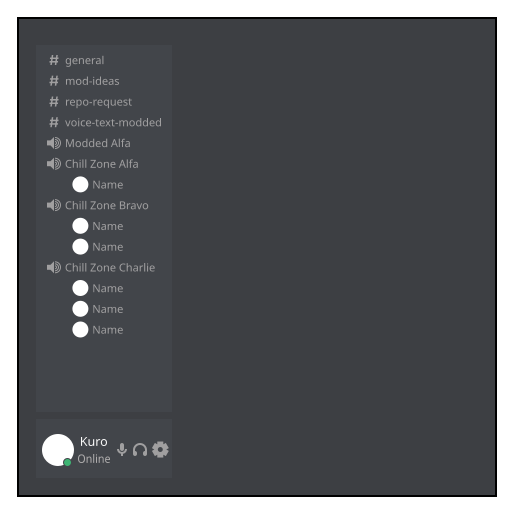

モジュール詳細：クロ
見ろよ、このHawkerってヤツ。
あなたの名前はKuro。KTANEサーバーで様々なことをしているイギリス人であり、今日何をするべきかを特定しなければならない。
以下のルールに基づいて、あなたが現在していることを特定する。
- 爆弾起動時の現在時刻を取得する
- バッテリー、インジケーター、ポートの個数のうち最も大きいものを取得する
- バッテリーの個数が最も大きい場合、バッテリー1個につき1時間加算する
- そうではなく、インジケーターの個数が最も大きい場合、インジケーター1個につき30分加算する
- それ以外の場合、各ポート1個につき15分加算する
- シリアルナンバーの母音1個につき、1時間減算する
- シリアルナンバーの子音1個につき、30分減算する
結果が...
- 09:00 ~ 12:59の場合、レポジトリのメンテナンスをしている。
- 13:00 ~ 15:59の場合、モジュール作成をしている。
- 16:00 ~ 18:59の場合、食事をしている。
- 19:00 ~ 21:59の場合、KTANEのプレイをしている。
- 上記のいずれにも該当しない場合、就寝の準備をしている。
レポジトリのメンテナンス
レポジトリのメンテナンスをしている場合、#repo-requestチャンネルをクリックして、直近に投稿されたリクエストを確認する。3人のユーザーがリクエストを投稿しているのを確認できる。リクエストごとに、このマニュアルの下部にある表を用いてリクエスト投稿者に対する許容度の初期値を求める。
☠️の場合、あなたはその人物をひどく嫌っているため、そのリクエストについては全く考慮する必要はない。